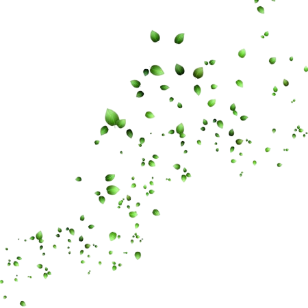

Multiplicidades
Decálogo herbal del editor
Decálogo herbal del editor
-
✤ ¿Para qué edito? Y, sobre todo, ¿para quién?
No entro con actitud civilizadora: no soy salvadora de nadie.
No trato con público, trato con gente: trabajar con y no para.
Soy mata, soy colectivo.
-
✤ Sitúo y me sitúo.
Soy persona, soy yo, soy subjetiva: la objetividad es espejismo.
Ocupo, como todos, un lugar en la estructura social.
Parada en mi posición, reconozco mis claridades y cegueras.
Ni oprimo ni me dejo oprimir: germino y dejo germinar.
-
✤ Efecto y afecto.
Me alejo de la pretensión occidental de racionalidad pura y me descolonizo desde el sentir.
Un pensamiento sentido y un sentimiento pensado: no podar la heterogeneidad de las texturas de la vida.
Llegar y tocar: afectar. Calar en lo más hondo. Hasta la raíz.
-
✤ Lo siempre vivo y lo nunca acabado.
La inmovilidad no existe: el texto no es un monolito.
Des-monumentalizo el libro y acepto el cambio y la movilidad de lo vivo.
Todo vive, todo es mata.
-
✤ Un vínculo entre mundos.
Queremos un-mundo-donde-quepan-muchos-mundos.
Mundos parciales, múltiples, críticos, contradictorios.
Mundos hierba. Mundos rizoma.